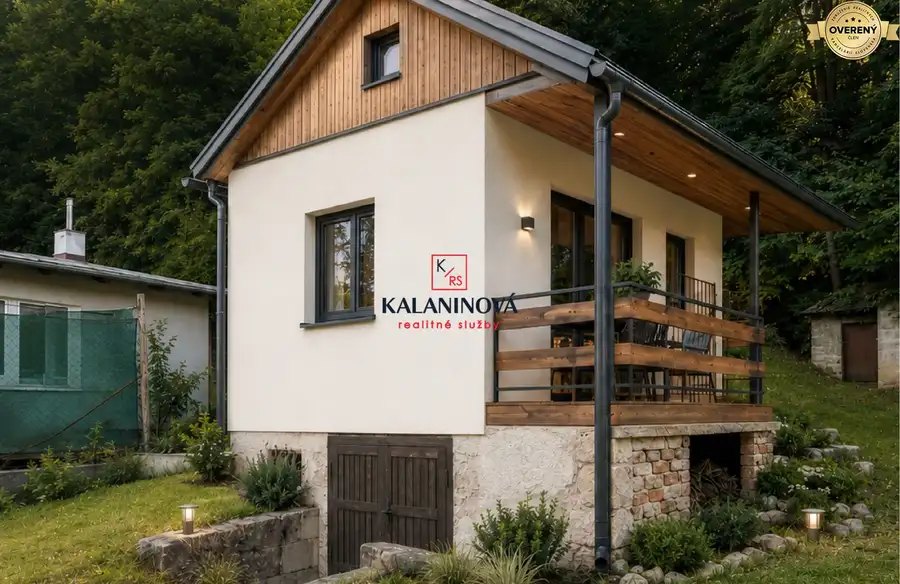
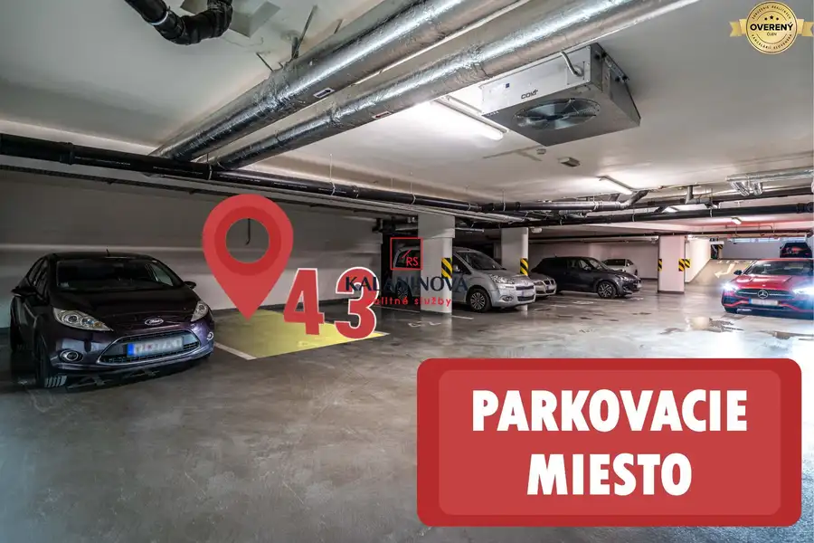
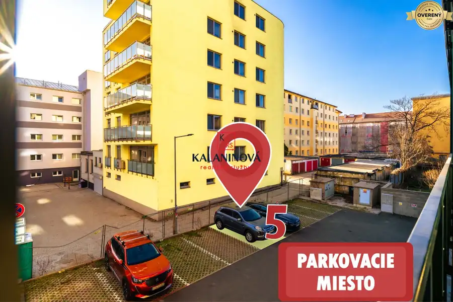

PREDAJ: zariadená novostavba rodinného domu, na začiatku Košice–Krásna
mestská časť Krásna, Košice
- Dispozícia4-izbový
- Plocha91 m²
- Poschodie0. z 1
- Stavúplne prerobený
- Energetická triedaB
O nehnuteľnosti
Ak hľadáte pokojné bývanie v meste, s dvomi prístupmi na pozemok, s krbom, saunou a s dobrým parkovaním, tak táto ponuka je práve pre Vás. Exkluzívne Vám ponúkame na predaj ZARIADENÚ, jednopodlažnú, nízkoenergetickú tehlovú novostavbu 4 izbového rodinného domu v radovej zástavbe v obytnom súbore IBV Krásna pri Jazere (I. etapa), v MČ Košice – Krásna, ul. Valalická. Dom bol skolaudovaný v 07/2020 a dokončený majiteľom, ktorý kúpil hrubú stavbu.
Táto nehnuteľnosť poskytuje komfort, nadčasové bývanie a aj súkromie. Jednak krb (s uzavretým ohniskom) v obývačke domu vytvára príjemnú atmosféru a pre relax – v kúpeľni infrasauna. Je určený pre klienta, ktorý hľadá pokojné bývanie, kvalitné prevedenie a dlhodobú hodnotu.
Veď posúďte sami. Pozrite si virtuálnu prehliadku, ktorá Vám nahradí klasickú obhliadku a VIDEO, ktoré vás doslova vnesú priamo do domu, priblížia jeho okolie, atmosféru interiéru ako aj exteriéru.
Virtuálna prehliadka – link: https://my.matterport.com/show/?m=E7NipZRBtkK
Video – link: https://youtu.be/3DYPHllVtZc
Pôdorys domu – medzi fotkami.
Viac fotiek na našej stránke: kalaninovareality.sk
Dom sa predáva so zariadením tak, ako ho vidíte.
Nachádza sa na začiatku MČ Krásna, v slepej ulici, s množstvom zelene a s dobrou dostupnosťou do centra mesta.
Vzdialenosť medzi ulicou Valalická 11 Košice – Krásna a autobusovou zastávkou Golianova (Košice - Nad jazerom) a je približne 550 metrov. Pešia trasa priamo naprieč trvá zvyčajne 5 až 7 minút (viď spevnená cesta na konci MČ Nad Jazerom - medzi fotkami po ľavej strane billboardu realitnej kancelárie).
Dom postavený na menšom rovinatom pozemku o rozlohe 381 m2, čo ocení každý majiteľ, ktorý sa nechce zaoberať zdĺhavým kosením. Na relax a rodinnú pohodu tento pozemok úplne postačuje. Pozemok je oplotený a vysadený okrasnými kríkmi, ale aj ovocnými kermi – na šťavnatom ovocí hurmikaky si určite pochutnáte. Pripravená plocha aj na bazén.
Zastavaná plocha domu je 148 m2, z toho úžitková plocha je 91 m2 + terasa o výmere 21,50 m2. Orientácia domu je na „V/Z“. Má energetický certifikát triedy „B“. Veľkou výhodou tohto rádového domu, je vstup na pozemok - do záhrady zozadu cez bráničku. Čiže veci do záhrady nebudete nosiť cez obývačku, ako je to bežne v radových domoch. Súčasťou predaja je aj spoluvlastnícky podiel k pozemku za záhradou. Dom je napojený na verejné inžinierske siete (voda, elektrina, kanalizácia). Kúrenie je podlahové teplovodné, kotol elektricky, podlahy v izbách sú laminátové, v predsieni, vo WC, kúpeľni a technickej miestnosti – kvalitná dlažba a obklady. Okná a vstupné dvere sú plastové. Na oknách spredu domu sú exteriérové žalúzie. Interiérové dvere sú drevené s oblôžkami. V dome je klimatizácia, protipožiarne hlásiče a komfortné LED osvetlenie pre bezpečný pohyb v noci.
Vzadu na pozemku sa nachádza záhradný domček, ktorý s plávajúcou podlahou na zemi, pôsobí skôr ako ďalšia izba.
Dispozícia domu je navrhnutá tak, aby poskytovala dostatok priestoru, súkromia aj prirodzeného svetla, pričom jednotlivé miestnosti na seba logicky nadväzujú.
Dispozičné riešenie domu:
- vstupná predsieň,
- technická miestnosť, kde je kotol, práčka so sušičkou,
- WC pre hostí s umývadlom, s bidetovou spŕškou,
- presvetlená obývacia izba s krbom a výstupom na terasu, ktorú si viete uzavrieť prostredníctvom vode odolnými terasovými plachtami, kde na Vás čaká príjemné posedenie a aj priestor na Jacuzzi,
- OPEN, na mieru robená, kuchyňa v tvare „L“ prepojená s obývacou izbou a jedálňou,
- praktická komora pri kuchyni,
- 3 izby, z toho hlavná spálňa s výstupom na terasu,
- kúpeľňa so sprchovým kútom, vaňou, INFRASAUNOU a WC ,
- záhradný domček, ktorý môže slúžiť ako GYM,
- pred domom parkovanie pre dve autá
Zariadenie domu:
- vstupná predsieň - na mieru robeným nábytkom (vešiaková zostava, šatníková skriňa),
- WC pre hostí s umývadlom - skrinka,
- obývacia izba vrátane jedálne - jedálenský stôl so stoličkami, nábytok, rohová sedacia súprava, konferenčný stolík, nábytok, krb,
- kuchyňa - vstavané spotrebičmi (indukčná doska, digestor, zabudovaná teplovzdušná elektrická rúra, zabudovaná chladnička s mrazničkou, dostatok úložného priestoru - výsuvné, výklopné skrin-ky, s optimálnym využitím priestoru,
- hlavná spálňa – manželská posteľ s nočnými stolíkmi, vstavaná skriňa,
- izba – vstavaná skriňa,
- kúpeľňa – nábytok, infrasauna
+ svietidlá v celom dome
Výhody nehnuteľnosti:
- lokalita – začiatok MČ Krásna, slepá ulica, tiché prostredie, dobrá dostupnosťou do centra mesta,
- rovinatá záhrada,
- prístup na pozemok z dvoch strán (obrovskou výhodou je aj zadný prístup na pozemok – súčasťou ceny je aj podiel na prístupovej ceste zozadu na pozemok)
- tri vstavané skrine, stačí čiastočne dozariadiť a nasťahovať sa,
- KVALITA - dom dokončený priamo majiteľom
Kúpna cena domu je vrátane poplatkov súvisiacich s predajom (vypracovanie kúpnych zmlúv advokátom, poplatky za autorizáciu (overenie) podpisov predávajúceho, kolky za štandardné podanie návrhu na vklad kúpnych zmlúv do katastra prostredníctvom advokáta) a samozrejme kompletné právne poradenstvo a servis. Cena je vrátane provízie pre RK. Dom je možné financovať aj cez hypotekárny úver, s ktorým Vám, vzhľadom na moju dlhoročnú bankovú prax, veľmi ochotne pomôžem. Ak Vás táto nehnuteľnosť zaujala, obhliadku nehnuteľnosti si môžete dohodnúť na tel. č. - Vaša realitná maklérka Renáta
Parametre
| Rozloha pozemku | 381 m² |
|---|---|
| Zastavaná plocha | 148 m² |
| Celková rozloha | 148 m² |
| Úžitková plocha | 91 m² |
| Poschodie | prízemie |
| Počet poschodí | 1 |
| Počet izieb | 4 |
| Stav | úplne prerobený |
| Odvoz odpadu | áno |
| Voda | verejný vodovod |
| El. napätie | 230V |
| Plyn | nie |
| Kanalizácia | áno |
| Internet | lokálny poskytovateľ |
| Kúpeľňa | vaňa a sprchovací kút |
| Vykurovanie | vlastné - elektrické |
| Terasa | áno - 1 |
| Pivnica | nie |
| Garáž | nie |
| Parkovanie | vonkajšie |
| Inžinierske siete | áno |
| Postavené z | tehla |
| Zariadenie | zariadený |
| Zateplený objekt | áno |
| Krb | áno |
| Klimatizácia | áno |
| Káblová televízia | áno |
| Energetický certifikát | B |
| Bezbariérový prístup | áno |
| Okná | plastové |
| Terén | rovina |
| Prístupová cesta | asfaltová cesta |
| Novostavba | áno |
| Dátum zverejnenia | 4. 3. 2026 |
Kde to je
Mohlo by Vás zaujímať

Chaty a chalupy10 69 000 €Na predaj chata pri lese, Kostoľany nad Hornádom, Košice-okolie Okolie 2-izbový35 m² Hľadáte únik z mesta v blízkosti Košíc, miesto na oddych a relax po náročnom pracovnom týždni alebo priestor, kde si vaše deti užijú prázdniny v…
Ostatné6 Cena dohodouPRENÁJOM: vnútorné parkovacie státie, Košice-centrum, Strojárenská mestská časť Staré Mesto, Košice 13 m² Ponúkame na prenájom parkovacie státie v hromadnej podzemnej garáži o výmere cca 13 m² v novostavbe Rezidencia pri Radnici, Strojárenská 11F, Košice…
Pozemok6 Cena dohodouPRENÁJOM parkovacieho miesta, Košice – Staré Mesto, ul. Strojárenská mestská časť Staré Mesto, Košice 11 m² Ponúkame na prenájom vonkajšie parkovacie miesto o výmere 11 m² pri bytovom dome Rezidencia pri Radnici, Strojárenská 11F, Košice – Staré Mesto.…